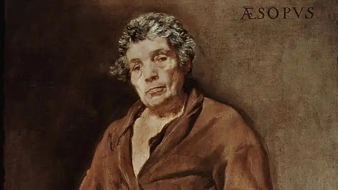

ЕЗОП
(VI ст. до н. е.)
Біографія Езопа (або Есопа) носить легендарний характер. Видатний байкар, засновник жанру байки, він нібито був рабом із Фрігії (Мала Азія), невеликим на зріст, некрасивим та ще й горбатим. Зате боги щедро нагородили його даром слова, гострим розумом і мистецтвом створювати байки. Його перший господар вирішив продати ні на що не придатного балакучого раба, якого купив простуватий філософ Ксанф з Самосу. Езоп вразив його дотепними відповідями. Коли Ксанф спитав Езопа, чи той хоче, щоб він його купив, Езоп нібито відповів: "А хіба тобі не все одно, чого я хочу? Купи мене в радники, тоді й запитуй". А на запитання, чи він завжди такий балакучий, Ксанф отримав відповідь, що за балакучих птахів завжди платять дорожче. Після того, як на репліку Ксанфа: "Але ти ж не птах, а виродок", Езоп відповів, що бочки в підвалах те ж потворні, але вино в них добре, філософ і взяв його до себе. Жодного разу Ксанф не пожалкував, що купив Езопа. Завдяки дотепному й винахідливому рабу Ксанф залишився в пам'яті поколінь, бо саме з ним легенда пов'язує багато езопових жартів і мудрих рішень. Широко відома й теорія про те, як Ксанф наказав Езопові купити на базарі для бенкету всього найкращого, що є у світі. Езоп приніс одні лише язики різного приготування і пояснив здивованому господарю, що найкраще у світі — це язик, бо саме ним домовляються, встановлюють закони, висловлюють високі й мудрі думки. На прохання купити наступного дня найгіршого, що є у світі, Езоп знову приніс язики — і довів Ксанфу, що в світі немає нічого гіршого за язик: ним люди обманюють один одного, починають сварки та війни. Господар був дуже роздратований, але не міг не визнати правоти Езопа. Коли же Ксанф після обіду, перебуваючи добряче напідпитку, хвальковито заявив, що він може випити море, а на ранок схаменувся від жаху про свою обіцянку, саме Езоп врятував його від ганьби. Він порадив Ксанфу виставити своєму супернику перед судцями й глядачами, які зберуться на березі моря, таку умову: хай суперник перекриє всі ріки, що впадають в море, бо Ксанф дійсно обіцяв випити море, але не обіцяв випити ще й ріки. Так Ксанф вийшов із скрутного становища, і його мудрість — викликала у всіх захоплення. Езоп багато разів просив Ксанфа дати йому волю, але той не хотів розлучатись з мудрим рабом. І тільки коли на Самосі скоїлась тривала пригода, яку ніхто не зміг роз'яснити, крім Езопа, він зміг позбавитись рабства. Під час засідання державної ради Самосу з неба налетів орел, схопив даржавну печатку, піднявся вверх і звідтіля відпустив її прямо в пазуху якомусь рабу. Покликали Ксанфа, щоб він розтлумачив цю знаменну подію. Він за своєю звичкою заявив, що це нижче його філософський гідності, але у нього є раб, який може роз'яснити, що все це значить. Езоп же сказав, що він міг би роз'яснити, та не годиться рабу давати поради вільним громадянам, а от якби його звільнили... Народ Самосу тут же звільнив Езопа, і він так розкрив смисл цієї події: "Орел — царський птах. Отже, цар Крез вирішив завоювати Самос і обернути його в рабство". Засмучені самосці відправили Езопа до Креза просити замирення. Мудрий Езоп сподобався царю, він зробив його своїм радником і замирився з самосцями. За легендою, після цього Езоп жив ще довго, побував у вавілонського та єгипетського царів, зустрічався з сімома мудрецями й написав багато байок. Загинув же він у Дельфах, де не сподобався дельфійським жерцям, які злякались, що він розкриє еллінам їх хитрощі, і скинули Езопа зі скали. Уславився ж Езоп в першу чергу як умілий байкар. Байка як жанр народної творчості виникла ще у догомерівську епоху. Вона являє собою коротке алегоричне оповідання, переважно віршоване, в якому завжди присутній дидактичний (повчальний) зміст. Складається з оповідної частини та обов'язкового висновку — повчання. Персонажами байок виступають різні звіри, птахи, рослини, у вчинках яких вбачаються і висміюються людські вади. Цей прихований підтекст художнього твору завдяки легендарному байкарю називається езопівською мовою. У Давній Греції відомі були збірки коротких байок у прозаїчній формі, авторство яких приписувалось Езопу. Сучасному читачеві майже всі вони добре відомі в обробках французького байкаря Ж. Лафонтена, російського І. Крилова, українських байкарів П. Гулака-Артемовського, Л. Боровиковського, Е. Гребінки, особливо Л. Глібова. Серед найпоширеніших байок Езопа можна назвати такі, як "Вовк та ягня", "Лисиця та виноград", "Стрекоза та муравей", "Лягушка та віл", "Селянин і змія", "Свиня і левиця" та інші. Взагалі підраховано, що в байках Езопа діють понад 80 тварин, біля 30 представників різних професій (мисливець, рибалка, кожум'яка, м'ясник), така ж кількість богів та міфологічних персонажів. От, скажімо, байка "Вовк та ягня". Вовк гнався за ягнятком. Рятуючись, ягня сховалось у храмі. Вовк став кликати його назад: "Виходь, бо все одно прийде жрець і принесе тебе в жертву богу". Ягня відповіло: "Краще стати жертвою богу, чим загинути від тебе". Байка повчає, що якщо треба вмерти, то краще вмерти з гідністю. А от байка про хитромудрого осла. Одного разу осел переходив річку з вантажем солі, послизнувся й упав; сіль розчинилась, і тягар став меншим. Осел зрадів і наступного разу, підійшовши до річки, впав уже навмисне. Та цього разу вантажем була вовна, яка розбухла від води, стала такою важкою, що осел потонув. Мораль — хитрість без розуму згубна. Ще байка про тварин. Замислились зайці, чому вони такі лякливі й вирішили, що краще всім їм разом втопитись. Підійшли до ставка, а лягушки, почувши їх, поскакали у воду й поховались. Зайці побачили це й сказали: "Почекаємо топитись: як видно, є у світі ще хтось більш полохливий, ніж ми". Або: свиня сміялась над левицею, що та народжує тільки одного маля. Левиця відповіла: "Одного, та зате лева". Саме ця народна мудрість, здоровий глузд, мрії й надії на справедливість, висловлені до того ж у дотепній формі, і зробили байки Езопа, як самого їх творця, безсмертними. ЛІТЕРАТУРА: 1. Гаспаров М. Л. Эзоп, мудрец-раб: Басни Эзопа//Гаспаров М. Л. Занимательная Греция. Рассказы о древнегреческой культуре.— М., 2000.; 2. Гиленсон Б. А. История античной литературы: Учеб. пособие: В 2 кн. Кн. 1. Древняя Греция.— 2-е изд.— М.: Флинта: Наука, 2002.— С. 68-69.; 3. Эзоп//Словарь античности. Пер. с нем.— М., 1994.